Ping Pong
Para começar a fazer o jogo no JavaScript, nós iremos usar o site do p5.js, que é mais facil de ser utilizado e mais facil para ver o resultado do código. O jogo vai ser dividido em partes, então para começar vamos explicar o simples sobre o código do JavaScript.
Parte 1. Código simples
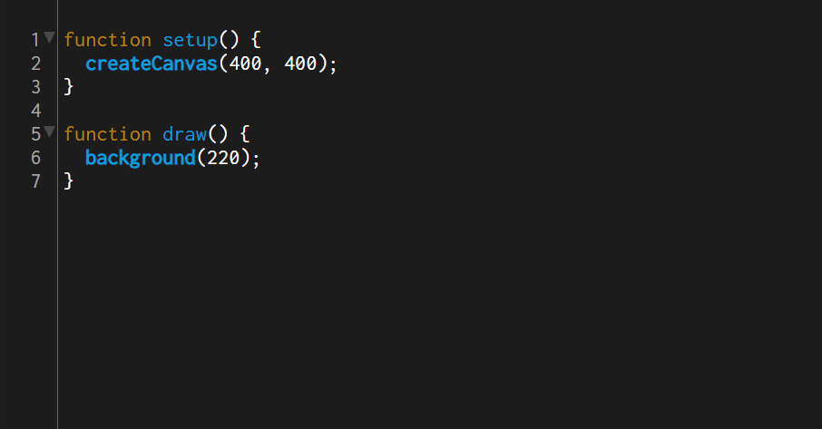
Como podemos ver acima, o p5.js já deixa esse pequeno código preparado para nos ajudar no começo. Para começar devemos entender o código que está escrito acima, a tag "function" ela serve para criar uma função especifica que é bom para deixar o código mais organizado. o "setup" é como a base do jogo. createCanvas é como se fosse a resolução do jogo, a tela onde vai acontecer o jogo. Draw serve para "desenhar" as coisas que vão ser postas no código, que é onde vai ser posto as coisas que estarão dentro do jogo. E por ultimo o background, que é a cor de fundo onde vai acontecer o jogo.
O JavaScript tem algumas regras simples que precisamos seguir para que tudo ocorra perfeitamente. Para começar todos os códigos devem começar com letra minúscula e a segunda letra tem que ser maiúscula. Por exemplo: xBolinha.
Parte 2. Mexendo no código simples
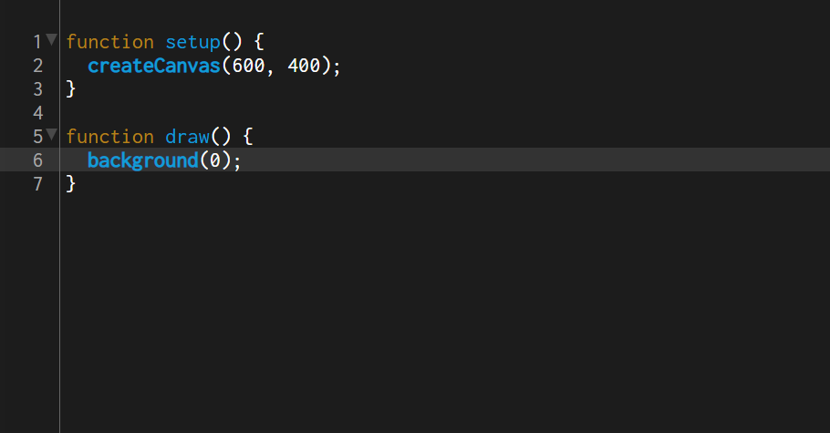
Agora para começarmos a mexer nesse código simples, vamos para o createCanvas, como dito acima, é a tag que faz o tamanho da tela do jogo, no tutorial usaremos a resolução de 600x400, para fazer isso é só colocar o tamanho que queira dentro dos ( ) que estão logo após do createCanvas, para colocar no 600x400 é só colocar (600, 400).
Agora o background, ele é a tag que vai ser colocado a cor de fundo do nosso jogo, o background usa a cor RGB e pode encontrar facilmente as cores na internet, no tutorial vamos usar a cor preta, para colocar a cor é só colocar o numero 0 dentro dos ( ). pode ser usado outras cores para o fundo, por exemplo caso queira a cor verde, basta por (0,100,0).
Site para pegar as cores RGB Celke
Parte 3. Bolinha
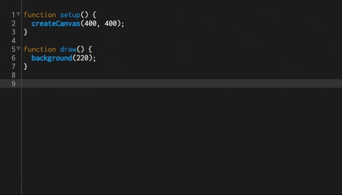
Agora que temos a nossa tela do jogo e a cor da nossa tela, vamos começar a fazer a bolinha. Mas antes é bom ficar testando o jogo a cada código que é colocado, para que caso dê algum erro no código, ele fique mais simples de ser arrumado
Para começar a fazer a bolinha primeiro vamos criar uma nova função que vai ter o trabalho de fazer a bolinha, cada função precisa ter um nome, nós usaremos o nome "bolinha", então para começar vamos escrever abaixo do ultimo }, function bolinha () {}, dentro dos {} é onde vai ficar o código da bolinha que no Java é escrito como circle. Dentro dos {} da function bolinha iremos escrever circle( ), dentro dos ( ) é onde vai ficar as especifiaçõs da bolinha, onde o primeiro numero é o X da bolinha, o segundo é o Y e o terceiro é o diametro da bolinha
O código pode ser: function bolinha() { circle (300, 165, 20) }
E para terminar, o nome da função deve ir dentro da função draw logo abaixo do background
Parte 4. Variaveis e Biblioteca
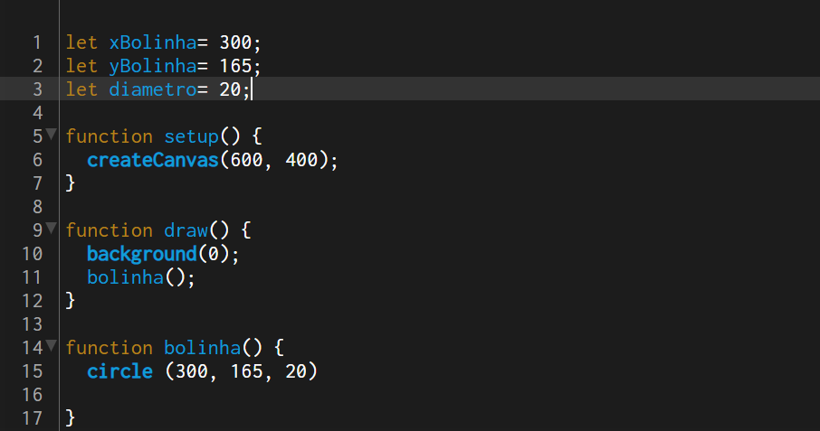
As variáveis são utilidades que vão ajudar a organizar o código e ficar mais fácil de ler, vamos trocar os numeros da bolinha por variáveis, para isso no topo do código vamos escrever let que é o que vai criar a variavel, aí o nome da variavel que vamos botar xBolinha (lembrando que a primeira letra sempre tem que ser em minúsculo), depois do nome precisa botar um = e o numero que foi posto no x da bolinha.
- let xBolinha= 300;
- let yBolinha= 165;
- let diametro= 20;
após isso basta substituir os numeros colocado na tag circle pelo nome das variáveis.
circle (xBolinha, yBolinha, diametro)
É assim que faz para criar as variáveis para o código, é muito bom usarmos bastente das variáveis para deixar o código bem mais fácil de ler e também para deixa-lo mais organizado. Além das variáveis também vamos falar sobre a biblioteca do p5.js, que é onde mostra todas as tags que podemos usar em nosso código, é recomendado que você dê uma boa explorada nela, para que você entenda melhor de como funciona as tags do JavaScript.
Parte 5. Movimentação
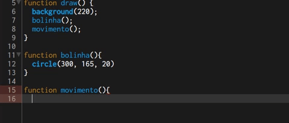
Agora que foi explicado sobre as variáveis e a biblioteca, vamos para a movimentação da bolinha. Para fazer essa movimentação, vamos denovo criar uma função. Criando uma função e botando um nome nela, que no tutorial usaremos movimento, dentro dos {} colocaremos o X da bolinha + o quanto queremos que ela se movimente. Por exemplo:
- xBolinha += 3;
- yBolinha +- -3;
Para deixar mais fácil vamos criar mais duas variáveis que vão ficar no lugar do 3 e o -3, chamados velocidadeXBolinha e velocidadeYBolinha. E denovo para botar essa função em ação devemos botar ela denovo na função draw. Assim terminando a movimentação da bolinha.
Parte 6. colisão
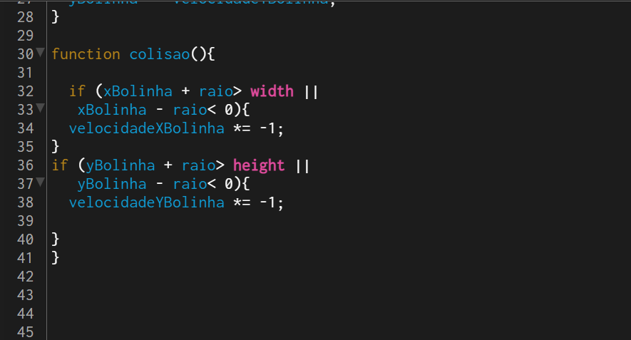
Agora para fazer a colisão da bolinha nas bordas da tela, primeiro precisamos do raio da bolinha, para isso criaremos mais uma variável.
let raio= diametro /2;
Agora para começarmos vamos criar mais uma função, chamada colisao, e dentro dessa função nós vamos usar a tag if. Confira o código abaixo
- if (xBolinha + raio> width ||
- xBolinha - raio< 0){
- velocidadeXBolinha *= -1;
- }
- if (yBolinha + raio> height ||
- yBolinha - raio< 0){
- velocidadeYBolinha *= -1;
- }
- }
Vamos explicar esse código por partes. primeiro se o X da bolinha mais o raio for maior que largura máxima da tela ou se o X da bolinha mais o raio for menor que 0 a velocidadeXBolinha vai ser multiplicada por -1, fazendo com que ele mude de direção
E o segundo if, traduzindo o código é. Se o Y da bolinha mais o radio for maior a altura máxima da tela ou se o Y da bolinha mais o raio for menor que 0 a velocidadeYBolinha vai ser multiplicada por -1, também fazendo com que ela mude de direção
E como sempre. precisamos botar a função da colisão a função draw.
Parte 7. Raquete
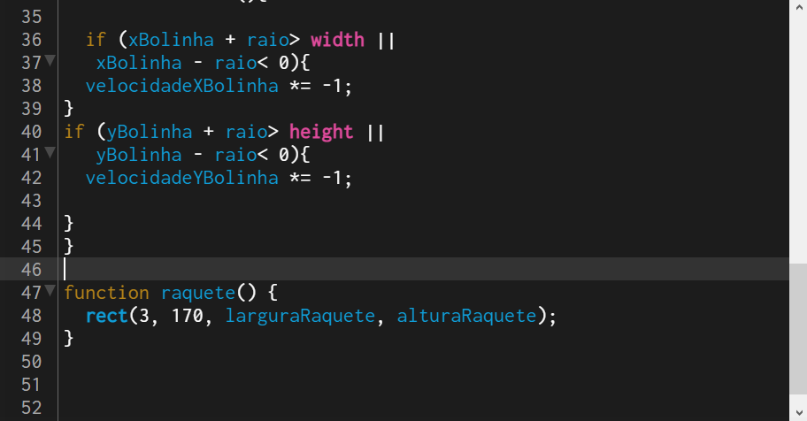
Agora vamos começar a fazer a nossa raquete, denovo como sempre vamos criar mais uma função, chamada raquete dentro dela usaremosa tag rect e igual a bolinha elas são parecidas na hora de dar as especificações. dentro dos ( ) do rect iremos botar (X da raquete, Y da raquete, largura da Raquete, altura da raquete ).
Para facilitar, vamos criar 4 variáveis, um para o X da raquete, um para o Y da raquete, um para a largura da raquete e mais um para a altura da raquete. pode ser colocado como citado abaixo.
- let xRaquete= 3;
- let yRaquete = 170;
- let larguraRaquete= 10;
- let alturaRaquete= 75;
Assim podemos substituir os numeros no rect pelas variáveis que foram criadas. E para finalizar devemos botar a função da raquete dentro na função draw.
Parte 8. Raquete inimiga
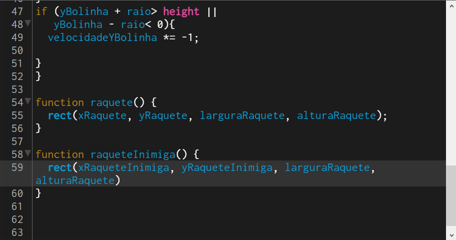
A raquete inimiga é o mesmo processo da nossa raquete, é só criar mais uma função chamada raqueteInimiga, colocar o rect e botar as especificações.
Vamos criar mais duas variáveis, uma chamada xRaqueteInimiga e outra yRaqueteInimiga como mostrado abaixo.
- let xRaqueteInimiga= 585;
- let yRaqueteInimiga= 160;
E na tag rect podemos colocar.
rect (xRaqueteInimiga, yRaqueteInimiga, larguraRaquete, alturaRaquete)
E para finalizar, precisamos botar a função da raqueteInimiga na função draw como sempre.
Parte 9. Movimento da Raquete.
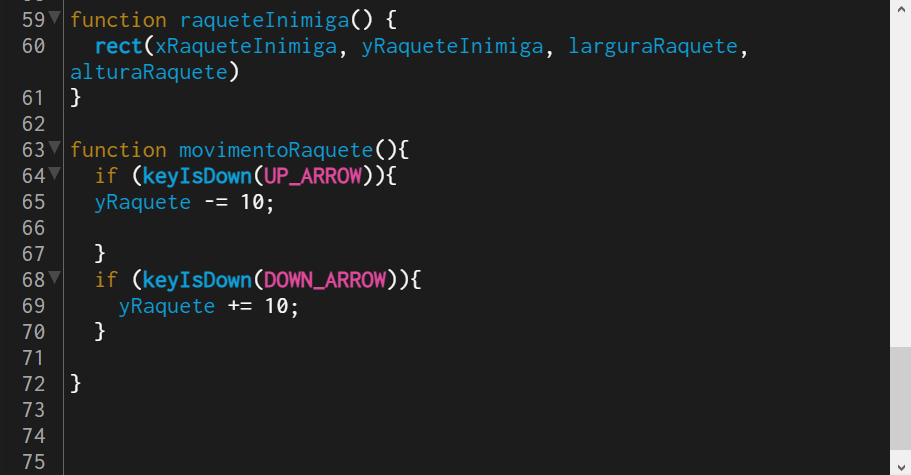
Agora vamos criar a movimentação da nossa raquete, vamos criar uma função chamada movimentoRaquete, e dentro dessa função iremos usar a tag if novamente e também a tag keyIsDown. Confira o código abaixo.
- if (keyIsDown(UP_ARROW)){
- yRaquete -= 10;
- }
- if (keyIsDown(DOWN_ARROW)){
- yRaquete += 10;
- }
- }
Basicamente esse código está fazendo a pergunta. Se a tecla da flechinha para cima estiver apertada o y da raquete ira diminuir em 10, ou se a tecla da flechinha pra baixo estiver apertada o y da raquete ira aumentar em 10.
Parte 10. Movimento da raquete inimiga.
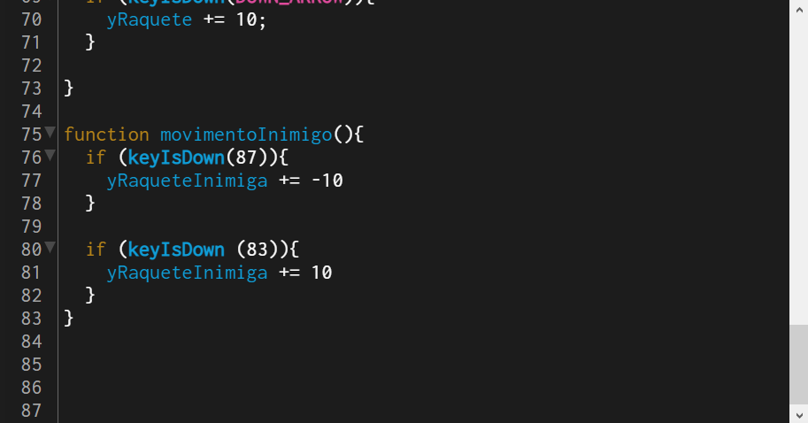
O movimento da raquete inimiga é igual ao movimento da nossa raquete mas ao inves de colocar "UP_ARROW" e "DOWN_ARROW", vamos colocar 87 e 83, esses numeros são marcações que levam as teclas W e S do teclado.
- 87= W
- 83= S
Parte 11. Upando arquivo do GitHub
Para fazer a colisão vamos pegar ajuda de um código feito por uma outra pessoa, para fazer isso entre no link Abaixo.
Dentro do GitHub vamos baixar o conteúdo disponivel pelo criador do conteúdo
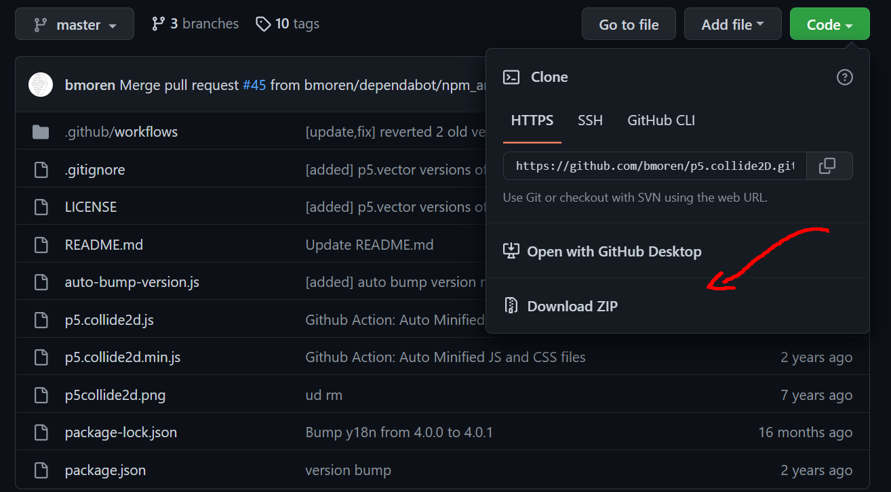
Após baixar o conteúdo da página vamos extrair o que foi baixado.
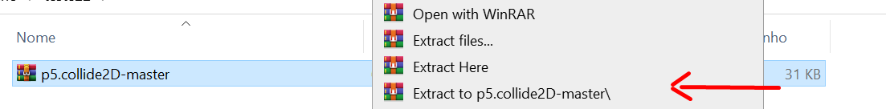depois de extrair, vamos voltar ao p5.js. Clicando no > que está no canto superior esquerdo, nós iremos adicionar um arquivo especifico da pasta do GitHub no p5.js
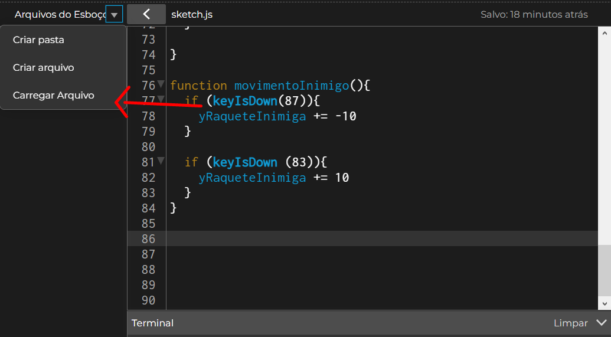Agora é só arrastar o arquivo chamado p5.collide2d para o p5.js.
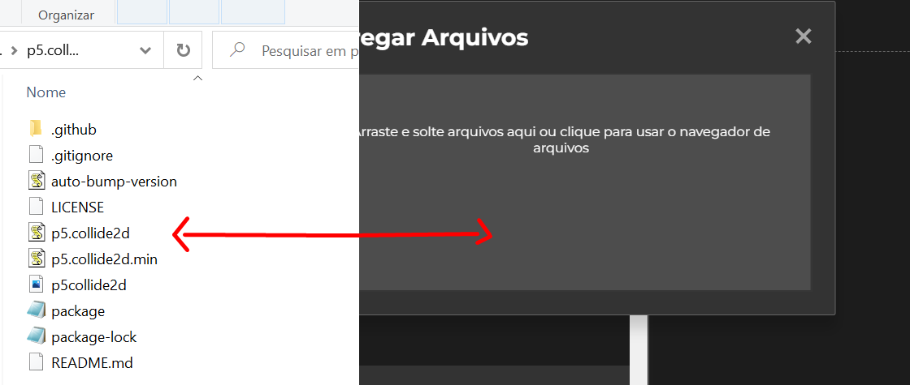Agora vamos no arquivo chamado index.html que está no canto superior esquerdo, na parte de baixo do código vai estar escrito script src="sketch.js" script, vamos criar mais um desse igual está escrito abaixo.
script src="p5.collide2d.js" script. Ele deve estar igual está na imagem abaixo.
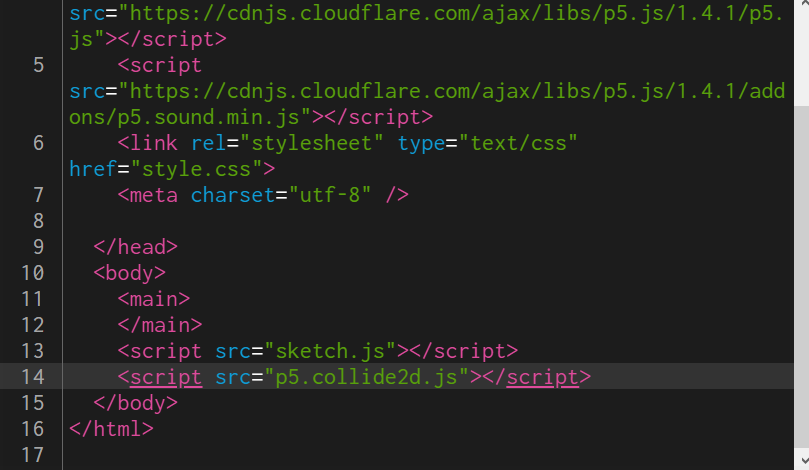Agora vamos mexer no p5.collide2d que também está localizado no canto superior esquerdo, dentro dele vamos apagar console, como mostrado na imagem abaixo.
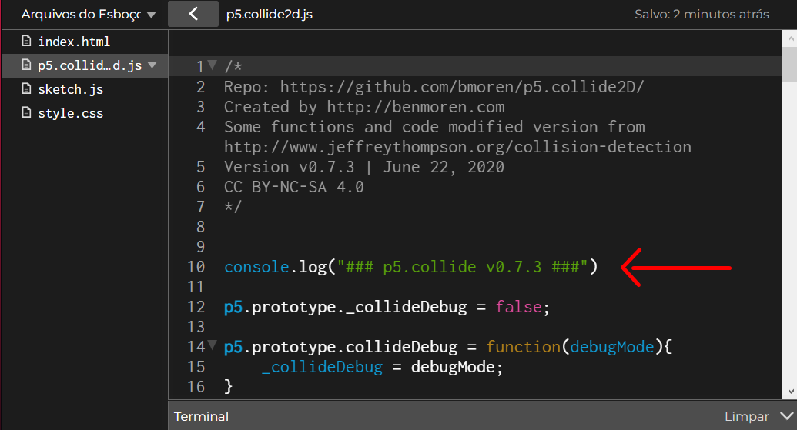Está feito, agora podemos começar a fazer a colisão da nossa raquete e da raquete do inimigo.
Parte 12. Colisão das raquetes.
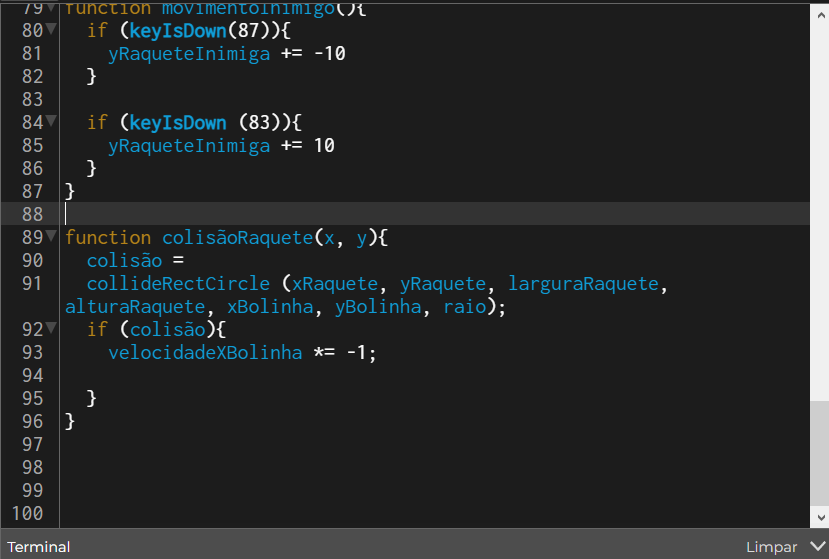
Agora vamos criar a colisão das raquetes, primeiro vamos criar uma variável escrita desta forma: let colisão= false. após isso vamos criar uma função chamada colisãoRaquete e daí escreva o código citado abaixo.
- colisão =
- collideRectCircle (xRaquete, yRaquete, larguraRaquete,
- alturaRaquete, xBolinha, yBolinha, raio);
- if (colisão){
- velocidadeXBolinha *= -1;
- }
- }
Para explicar o código, se a colisão for verdadeira a velocidade X da bolinha é multiplicada por 1 fazendo com que ela mude de direção. Para fazer com que a colisão pegue na raquete inimiga, vamos fazer uma nova função chamada colisãoRaqueteInimiga e vamos repetir o código e ao inves de xRaquete e yRaquete, iremos colocar o xRaqueteInimiga e yRaqueteInimiga.
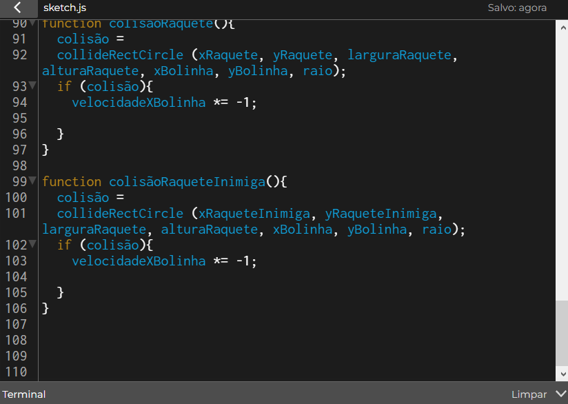E depois disso é só colocarmos o nome da função dentro da função draw.
Parte 13. Placares.
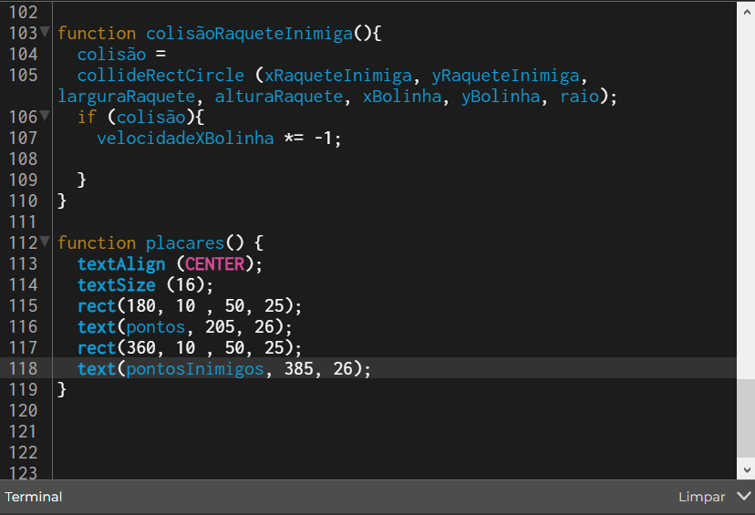
Agora vamos fazer as marcações de pontos do nosso jogo. Para começar vamos criar duas variáveis iguais como citadas abaixo.
- let pontos= 0;
- let pontosInimigos= 0;
Vamos criar mais uma função com o nome de placares, dentro dela vamos escrever o seguinte código:
- textAlign (CENTER);
- textSize (16);
- rect(180, 10 , 50, 25);
- text(pontos, 205, 26);
- rect(360, 10 , 50, 25);
- text(pontosInimigos, 385, 26);
Esse código é bem simples, explicando ele, o text align center serve para centralizar os nossos pontos, text size é para aumentar o tamanho da fonte, o rect é para criarmos um retangulo envolta dos pontos, e o text é para fazermos os pontos. Para finalizar a aparência dos nossos placares basta colocar o nome da função dentro da função draw.
Parte 14. Marcação de pontos.
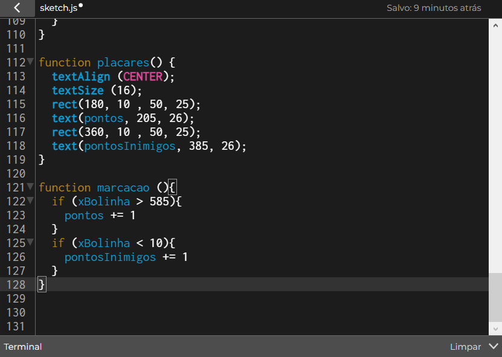
Para finalizarmos nosso jogo falta apenas a marcação dos nossos pontos. O código da marcação é um código bem simples, para começar vamos fazer nossa ultima função, chamada marcação, dentro dela escreva o código abaixo.
- if (xBolinha > 590){
- pontos += 1
- }
- if (xBolinha < 10){
- pontosInimigos += 1
- }
Traduzindo esse código é se o X da bolinha for maior que 585 vai adicionar 1 para os meus pontos, e se o X da bolinha for menor que 10 adicionar 1 para os pontos do inimigo.
CONCLUSÃO
Muito obrigado se você lêu até aqui, espero que tenha conseguido entender e que tenha conseguido fazer o jogo do Ping Pong, caso tenha alguma duvida ou reclamação entre em contato com o nosso E-mail.
Email: ColdRosaContact@gmail.com
Confira também: